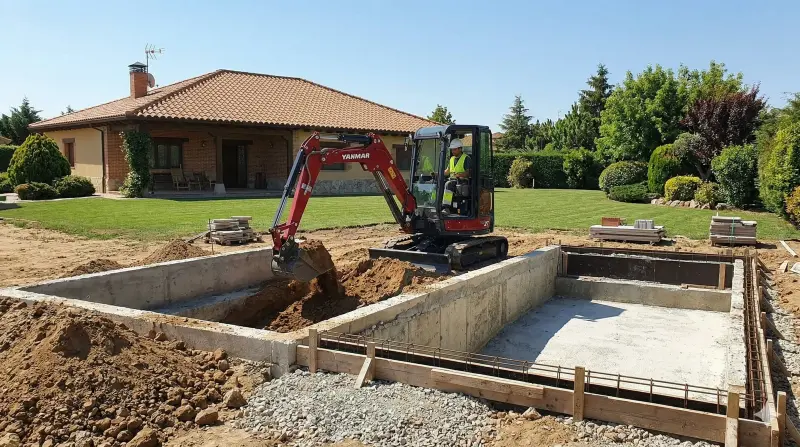
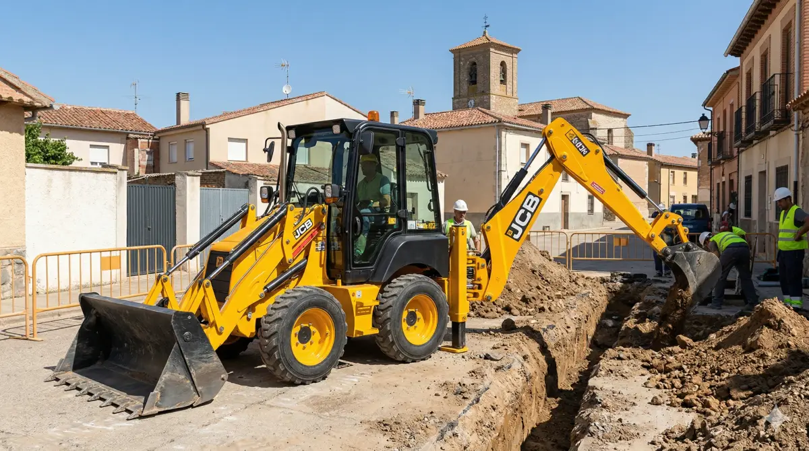
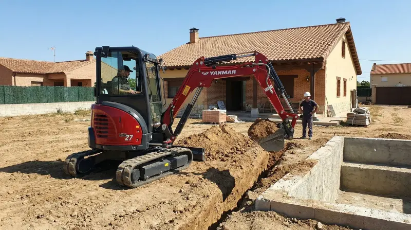

Nos encargamos de todo el proceso: desde el movimiento de tierras y la cimentación hasta el acabado final, coordinando cada fase de la obra para que no tengas que preocuparte de nada.
Construcción de vivienda
Ejecución de obra nueva desde la cimentación hasta la entrega llave en mano.
Reforma integral
Reforma completa de viviendas y locales: distribución, instalaciones y acabados.
Cimentaciones y soleras
Preparación de terreno, zanjas de cimentación, soleras y saneamientos.
Espacios exteriores
Piscinas, porches, urbanización de jardines y accesos a la vivienda.



¿Tienes un proyecto en mente? Cuéntanos qué necesitas y te preparamos un presupuesto sin compromiso en el 607 444 903 o en excavacionesart@gmail.com.